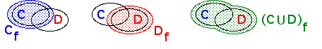

| Lemma 1 For all compact sets A, B, C, and D in the plane, h(A ∪ B, C ∪ D) ≤ max{h(A,C),h(B,D)}. |
| Proof Let d = h(A,C) and e = h(B,D). Then |
| A ⊆ Cd, C ⊆ Ad, |
| B ⊆ De, D ⊆ Be. |
| Writing f = max{d, e}, we see |
| A ⊆ Cf, C ⊆ Af, |
| B ⊆ Df, D ⊆ Bf. |
| Consequently, |
| A ∪ B ⊆ Cf ∪ Df |
| It is an easy exercise to show that |
| Cf ∪ Df ⊆ (C ∪ D)f. |
|  |
| Combining these last two inclusions we see |
| A ∪ B ⊆ (C ∪ D)f. |
| A similar argument gives |
| C ∪ D ⊆ (A ∪ B)f. |
| Consequently, |
| h(A ∪ B, C ∪ D) ≤ f = max{h(A,C),h(B,D)}. |
Return to Hausdorff contraction factor.